Branch-Line Coupler
Introduction
This is a microstrip Branch-Line coupler designed over a 20 mil RO4003C.
The project files are available here
The Branch-Line coupler is one of the easiest couplers to design, and it is very common and well known in the literature. It consists of four λ/4 transmission lines: the series lines are Z₀/√2 Ω and the shunt lines are Z₀ Ω.
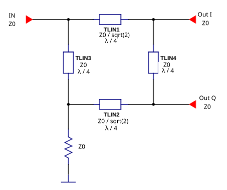
Features
Simple design
Easy to fabricate in microstrip
Good port isolation
Equal power split (3 dB)
90° phase difference between output ports
All ports are matched simultaneously
Warning
Narrow bandwidth (~10–20%)
Large size at low frequencies
References
David M. Pozar, Microwave Engineering, 4th Edition, 2012. Chapter 7.5
Unknown Editor, Microwaves101, Branchline Couplers
Specifications
Feature |
Value |
|---|---|
Band |
[1800, 2200] MHz |
Insertion Loss (I/Q) |
3.5 ± 0.5 dB |
I/Q phase difference |
90±2 deg |
Return Loss |
<-12 dB |
I/Q Isolation |
>12 dB |
Design Procedure
1. Ideal Transmission Line Implementation
As a first approach, the Branch-Line is designed with ideal transmission lines to see its behavior. This can be done in Qucs-S using the Qucsator-RF backend.
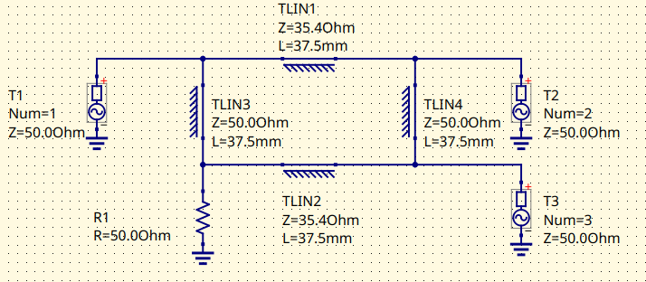
Branch-Line schematic with ideal transmission lines
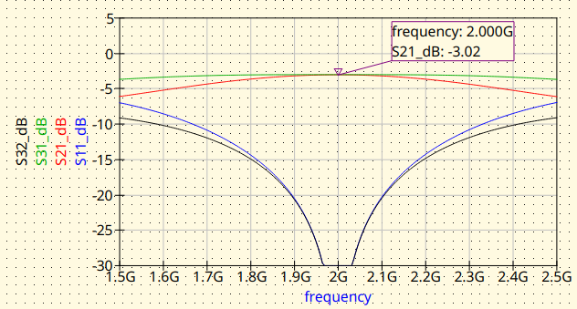
Branch-Line with ideal transmission lines. Magnitude response
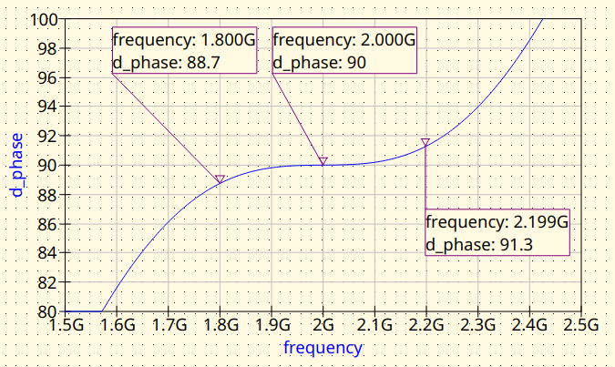
Branch-Line with ideal transmission lines. Phase difference between outputs
2. Microstrip (MS) Line Implementation
The ideal transmission lines are replaced by microstrip transmission lines. The synthesis can be done with the Transmission Line tool from Qucs-S or directly with the RF Circuit Synthesis Tools embedded in the Qucs-S S-Parameter Viewer, both tools are included in the Qucs-S suite.
2.1 MS: No Junctions nor Feed Lines
The ideal transmission lines by microstrip lines. The junctions and the feed lines are not included at this stage. This approach will let to evaluate the impact of the junctions and also, the feedlines later.
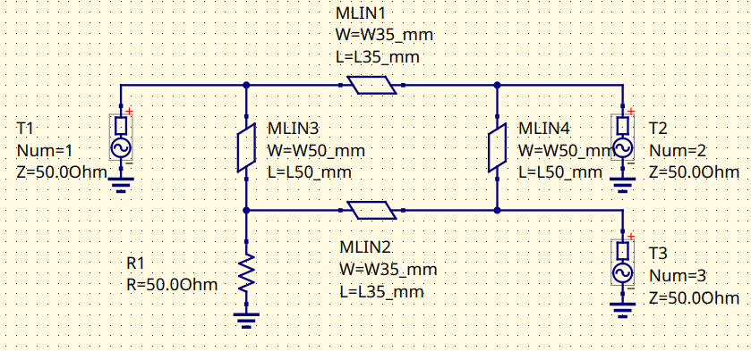
Branch-Line with microstrip lines. Schematic
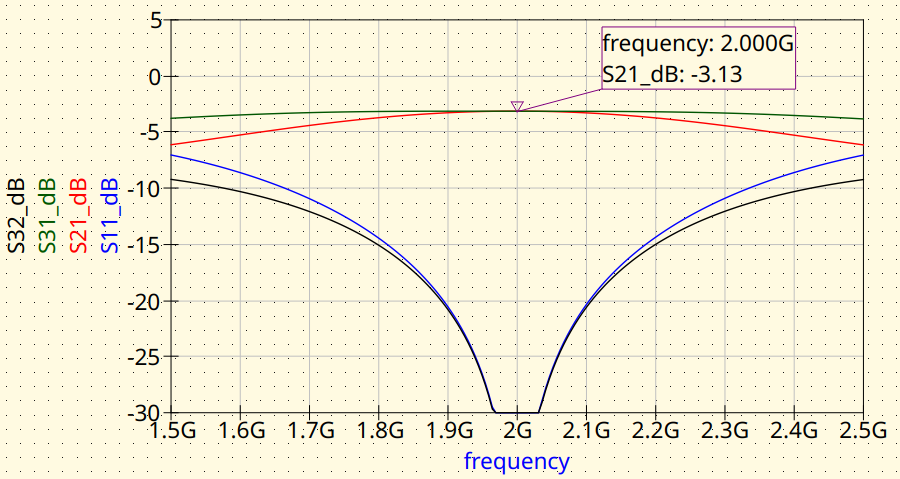
Branch-Line with microstrip lines. Magnitude response
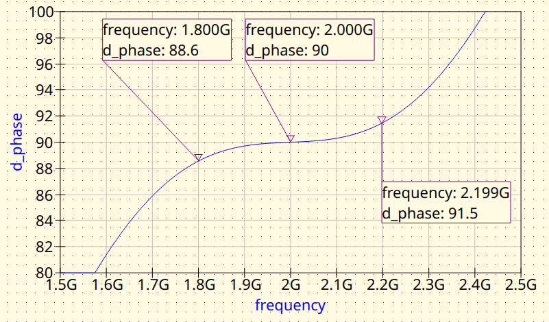
Branch-Line with microstrip lines. Phase difference between outputs
2.2 MS: Add Junctions and Feed Lines
The tee junctions and the feed lines are added. Notice that the tee junctions pull the center frequency down. The feed lines have no effect on the response as they are 50 Ω lines, they only add some insertion loss.
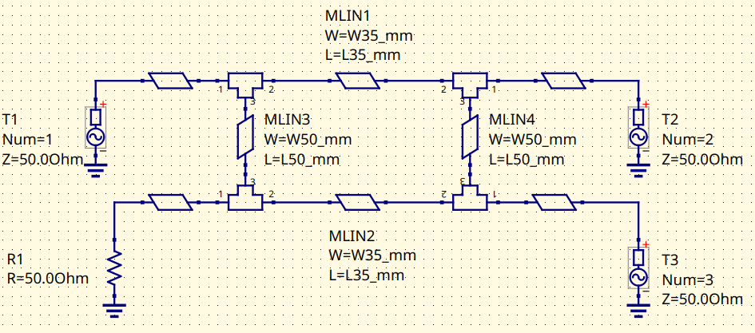
Branch-Line with microstrip lines. Schematic
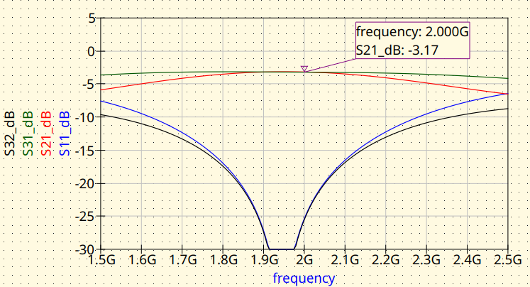
Branch-Line with microstrip lines. Magnitude response
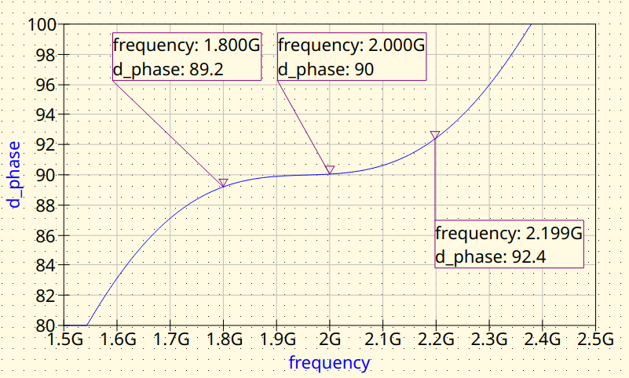
Branch-Line with microstrip lines. Phase difference between outputs
2.3 MS: Fine Tuning
The loading of the junctions need to be corrected to have the Branch-Line coupler working at 2000 MHz. The circuit variables are tuned for this.
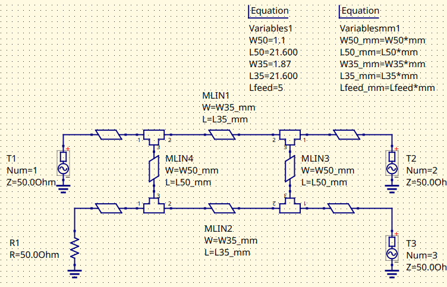
Fined-tuned Branch-Line coupler (MS). Schematic
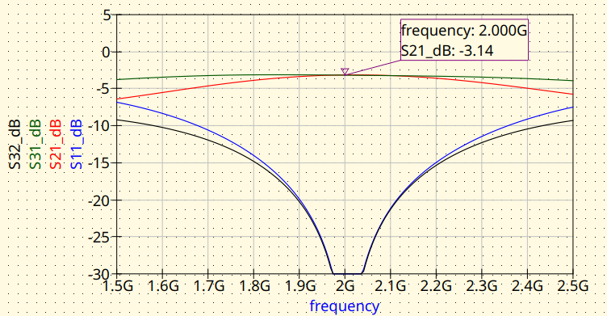
Fined-tuned Branch-Line coupler (MS). Magnitude response
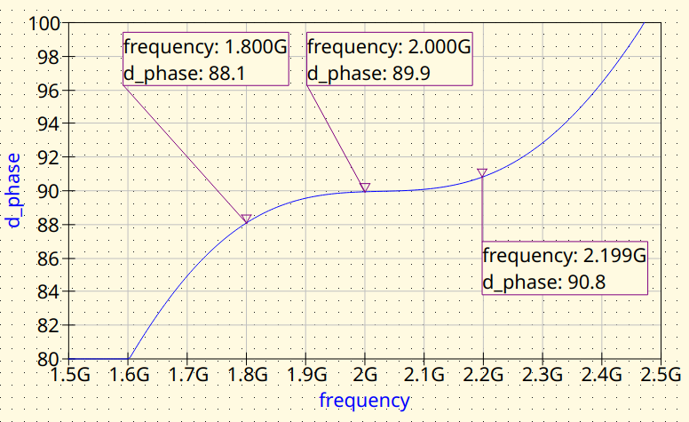
Fined-tuned Branch-Line coupler (MS). Phase difference between outputs
3. EM simulation
Once the microstrip model is good enough, then it’s convenient to validate it with an EM tool. EMerge software is particularly well suited for this. The reader is encourage to install EMerge from GitHub and give it a try.
The model definition is as follows:
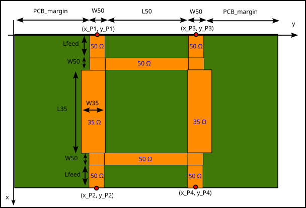
And this is the Python script for running the simulation:
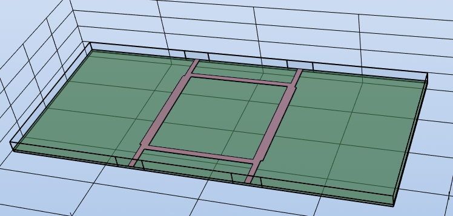
EMerge 3D model view
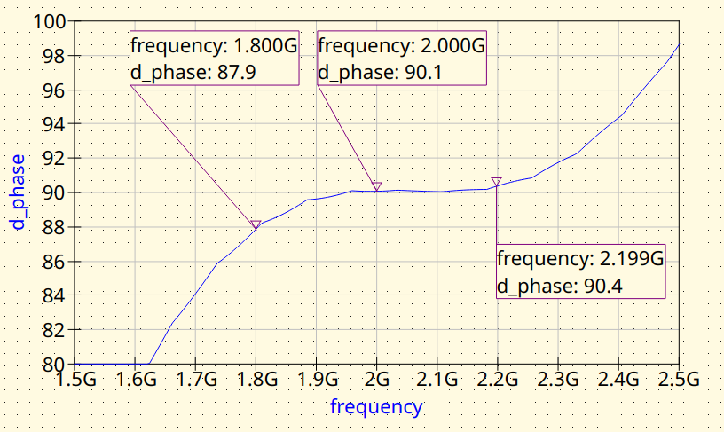
EMerge FEM simulation. Phase difference between outputs
3.1 Use design variables for 2.2
First, the system is modelled using the design variables obtained from step 2.2 as the input
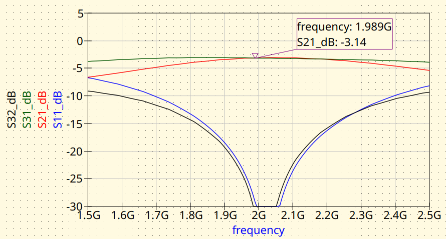
EMerge FEM simulation. Magnitude response.
EMerge FEM simulation. Phase difference between outputs
3.2 Fine-tuning
The reader may notice that the center frequency of the Branch-Line coupler is shifted towards high frequencies, so some retuning is needed.
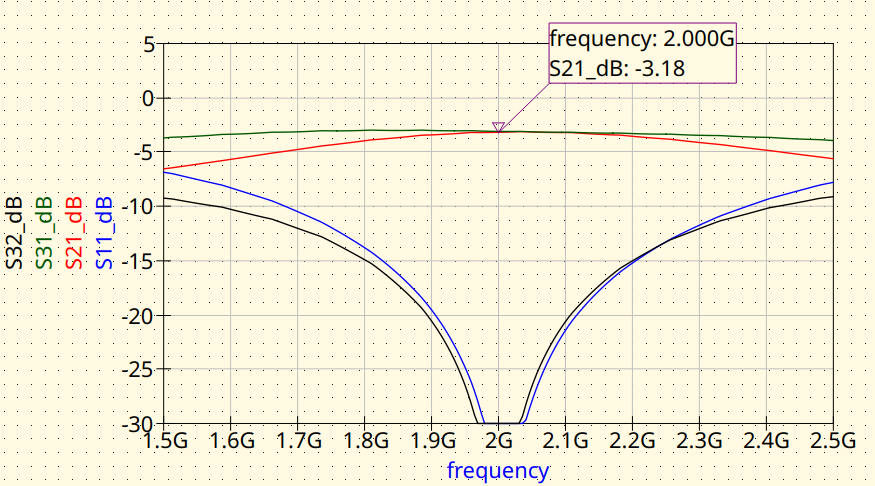
EMerge FEM simulation. Magnitude response.
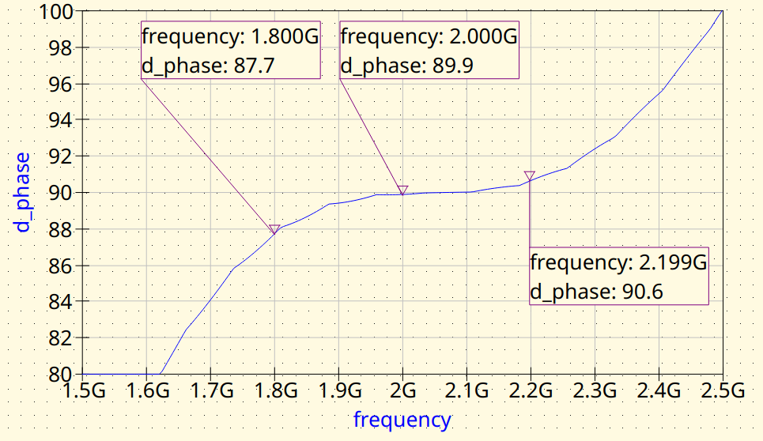
EMerge FEM simulation. Phase difference between outputs